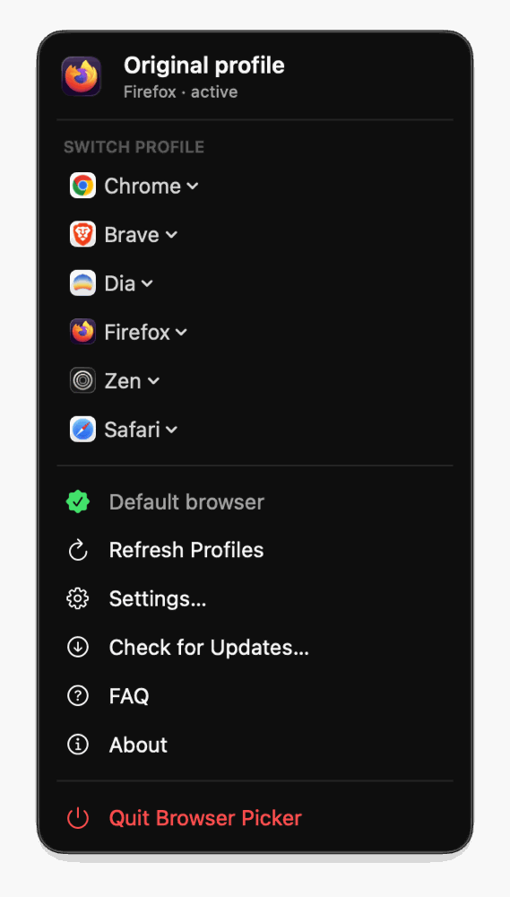
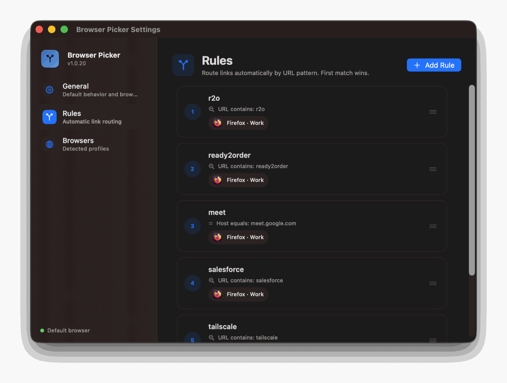
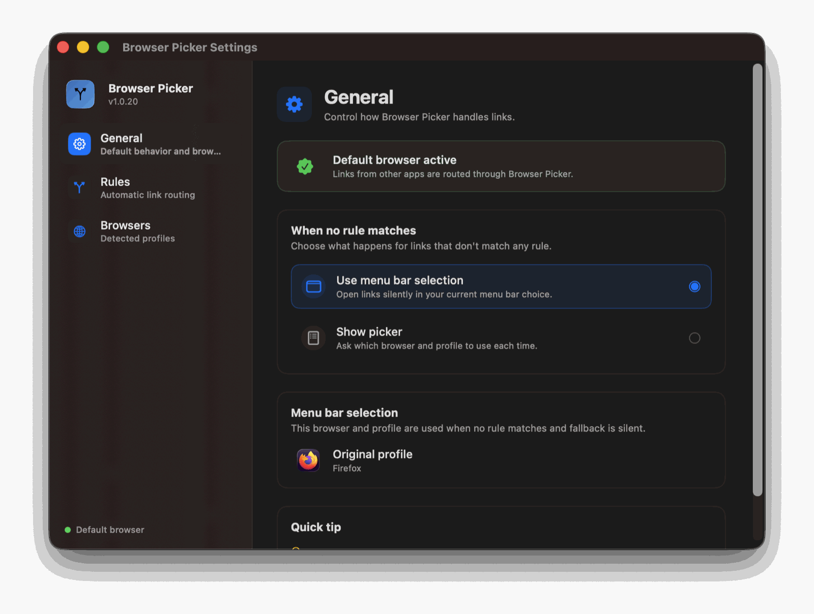
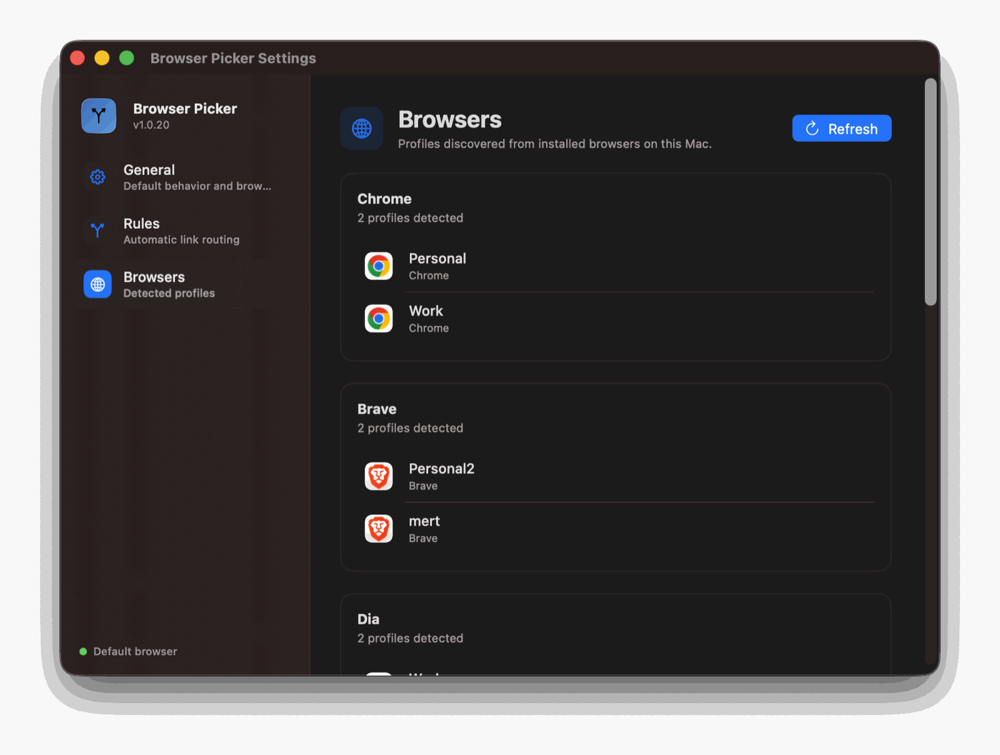

Profile-level routing
Not just “open in Chrome” — “open in Chrome → Work” or “Firefox → Client A”. Each link lands in the right account, already signed in.
Free & open source for macOS
Browser Picker becomes your default browser and quietly sends every link to the exact browser and profile it belongs to. Work links to your work profile, personal links to your personal one — automatically.
brew install --cask mertizci/tap/browser-picker

A personal Chrome. A work Chrome profile. Firefox for a client. Safari for everything else. Every link you click is a small gamble — and when it loses, you're signed into the wrong account, copying the URL, and pasting it somewhere else.
Browser Picker removes the gamble. It sits in your menu bar as the system default browser, looks at each incoming link, and opens it exactly where it belongs.
Not just “open in Chrome” — “open in Chrome → Work” or “Firefox → Client A”. Each link lands in the right account, already signed in.
Match links by URL contains, host equals, or host suffix. First match wins, and you can reorder rules by dragging.
No rule for this link? Choose the browser and profile on the fly, or let it fall through silently to whatever you selected in the menu bar.
Chrome, Edge, Brave and Vivaldi from their Local State; Firefox from
profiles.ini and Profile Groups; Safari from its profile database.
Switch your active browser and profile in one click. No dock icon, no window in your way — just a small popover when you need it.
Written in Swift and SwiftUI, universal for Apple Silicon and Intel, signed with a Developer ID certificate and notarized by Apple. No Gatekeeper warnings.
Three panes, no clutter. Set the fallback behaviour, write your rules, and check the profiles Browser Picker found on your Mac.



The icon appears in your menu bar. A short onboarding asks for the permissions it needs to reach Safari profiles.
One click from the menu bar, or pick Browser Picker under System Settings → Desktop & Dock.
Open Settings → Rules and describe where links should go, for example host suffix github.com → Chrome · Work.
Free and open source. Every release is signed and notarized by Apple, so it opens without warnings.
Grab the latest disk image, open it, and drag Browser Picker into your Applications folder.
Download latest releaseUniversal build · macOS 14.0 or later
Already a Homebrew user? Install and update it with a single command.
brew install --cask mertizci/tap/browser-picker
Updates arrive with brew upgrade.
Yes. Browser Picker ships as a universal binary, so it runs natively on both Apple Silicon and Intel Macs. It requires macOS 14.0 (Sonoma) or later.
Safari, Google Chrome, Microsoft Edge, Brave, Vivaldi and Firefox — including their individual profiles.
Only for Safari. Safari has no public way to open a link in a specific profile, so Browser Picker drives Safari's own File menu to do it, and reads Safari's profile names from a protected file. Other browsers need no permissions at all.
No. Everything happens on your Mac. There is no analytics, no account, and no network traffic other than an optional check for new releases on GitHub. Your settings live in a plain JSON file in your Library folder.
Yes, and the source is on GitHub. If it saves you time, you're welcome to buy me a coffee — but nothing is locked behind it.
Install it once, add a couple of rules, and forget it's there.